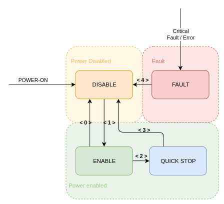
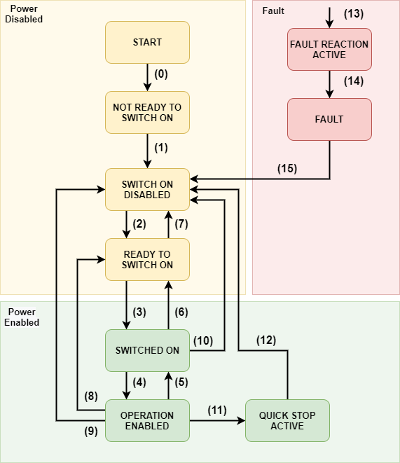

State Machine#
Internal state machine of the MD driver is compliant with industrial CIA402 standard, and allows for precise state control and validation.
However for most applications, such level of control can introduce complication rather than functionality, thus we will first describe simplified model, and later full model, for those who require it.
MD Protocol model#
Note
This section is applicable while operating MD using MD Protocol.
While internally the state machine is transitioning though states as CIA402 requires, most of those changes happen in a span of micro-seconds, and are not very important from user perspective.

Transition |
Description |
Example |
|---|---|---|
< 0 > |
Disable by user |
CANdleSDK: |
< 1 > |
Enable by user |
CANdleSDK: |
< 2 > |
Non-critical error |
Position/Velocity limit hit; CAN communication loss |
< 3 > |
Velocity reached zero |
- |
< 4 > |
All errors cleared |
CANdleSDK: |
Full State Machine model#
Note
This section is applicable while operating MD using CANOpen Protocol.
The state machine is defined according to CIA402 specification as follows:

All the transitions are based on the control word. The current state can be read using the status word (0x6041)
Command |
Reset Fault (bit 7) |
Enable Operation (bit 3) |
Quick Stop (bit 2) |
Disable Voltage (bit 1) |
Switch On (bit 0) |
Decimal Value |
|---|---|---|---|---|---|---|
Shutdown |
0 |
X |
1 |
1 |
0 |
6 |
Switch On |
0 |
0 |
1 |
1 |
1 |
7 |
Switch On and Enable Operation |
0 |
1 |
1 |
1 |
1 |
15 |
Disable Voltage |
0 |
X |
X |
0 |
X |
0 |
Quick Stop |
0 |
X |
0 |
1 |
X |
2 |
Disable Operation |
0 |
0 |
1 |
1 |
1 |
7 |
Enable Operation |
0 |
1 |
1 |
1 |
1 |
15 |
Fault Reset |
0→1 |
X |
X |
X |
X |
128 |
Table 1: State machine control word description.
X means “do not care”
Example:#
To put the drive into operational mode set:
Control word = 6 (dec) (Shutdown cmd)
Control word = 15 (dec) (Switch on and Enable Operation cmds)
The events and respective transitions are gathered in the table below:
Transition |
Event |
Internal Action |
|---|---|---|
0 |
Automatic transition after power up |
Drive internal initialization |
1 |
Automatic transition after drives internal initialization |
Object dictionary is initialized with NVM data |
2 |
Shutdown command received |
None |
3 |
Switch on command received |
None |
4 |
Enable operation command received |
Current controllers are on, power is applied to the motor |
5 |
Disable operation command received |
Current controllers are off, power is not applied to the motor |
6 |
Shutdown command received |
Current controllers are turned off |
7 |
Quick stop command received |
Current controllers are turned off |
8 |
Shutdown command received |
Current controllers are turned off |
9 |
Disable voltage command received |
Current controllers are turned off |
10 |
Disable voltage / Quick stop command received |
Current controllers are turned off |
11 |
Quick stop command received |
Quick stop action is enabled. The drive decelerates and transits to SWITCH ON DISABLED |
12 |
Automatic transition when quick stop is completed |
Current controllers are turned off |
13 |
Fault occurred |
Current controllers are turned off |
14 |
Automatic transition to fault state |
None |
15 |
Fault reset command received |
Fault is cleared if not critical |
Table 2: State machine transitions description.
0x6041 – Statusword#
Describes the current state of the internal CiA402 state machine implemented on the drive.
Entry table
Name |
Index:Sub |
Type |
Bit Size |
Default Data |
Min Data |
Max Data |
Unit |
SDO |
PDO |
|---|---|---|---|---|---|---|---|---|---|
Statusword |
0x6041:0 |
UNSIGNED16 |
16 |
0 |
— |
— |
— |
RO |
Tx |
Status Word |
State Machine State |
|---|---|
xxxx xxxx x0xx 0000 |
Not Ready to Switch On |
xxxx xxxx x1xx 0000 |
Switch On Disabled |
xxxx xxxx x01x 0001 |
Ready to Switch On |
xxxx xxxx x01x 0011 |
Switched On |
xxxx xxxx x01x 0111 |
Operation Enabled |
xxxx xxxx x00x 0111 |
Quick Stop Active |
xxxx xxxx x0xx 1111 |
Fault Reaction Active |
xxxx xxxx x0xx 1000 |
Quick Stop Active |
Table 3: State machine status word description.
Bit 10 of the statusword indicates the current target has been reached (1) or not (0). This bit is motion mode - dependent, meaning for example in position mode it indicates the position has been reached (within a 0x6067 Position Window margin), and in velocity mode that a velocity target has been reached (within 0x606D Velocity Window).
Bit 11 of the Statusword indicates whether any of the internal limits was active during current power up - for more information on which limit is active, check the 0x2003:7 Motion Status.